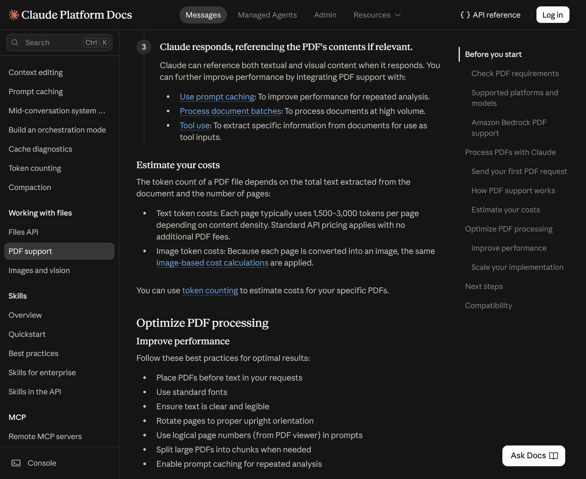
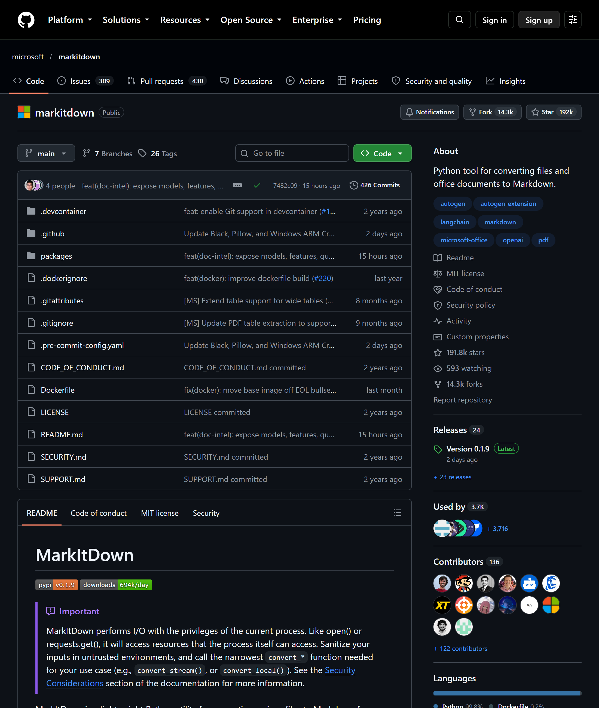
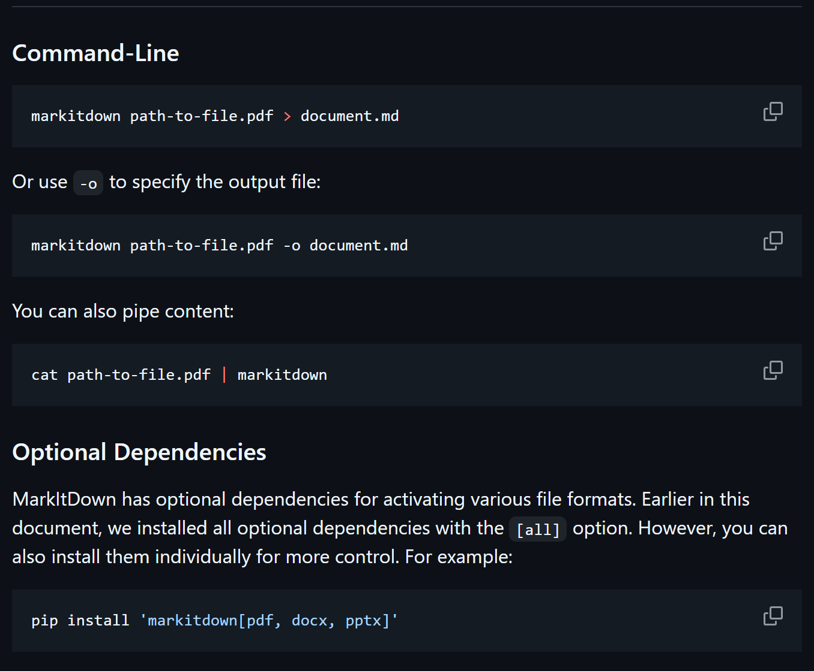
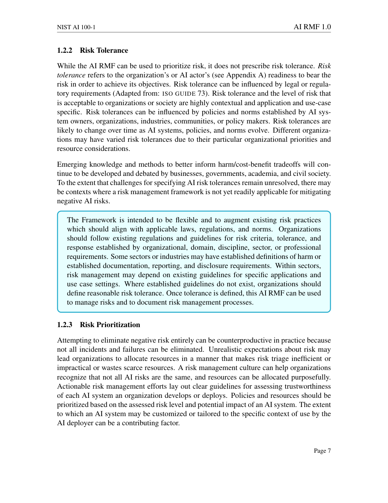
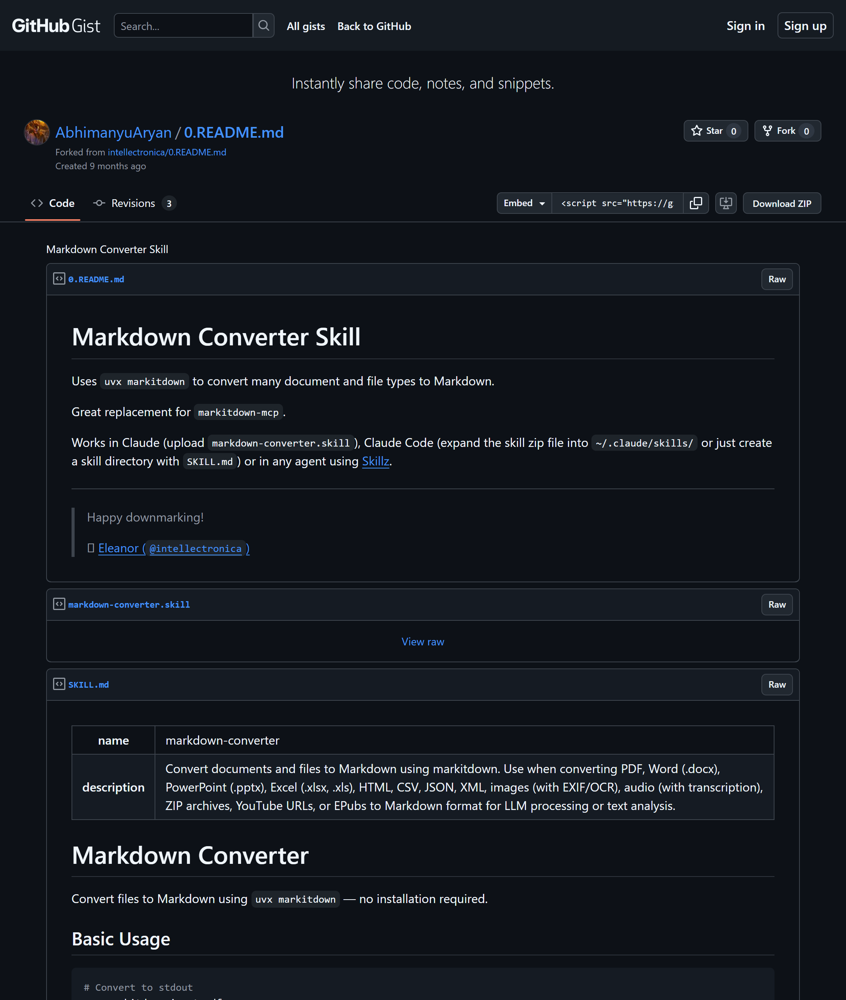
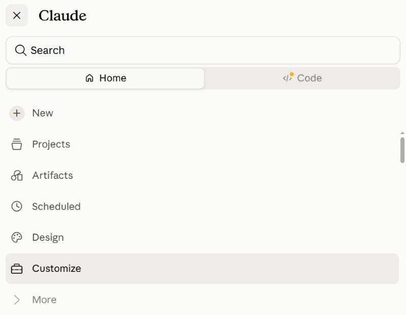
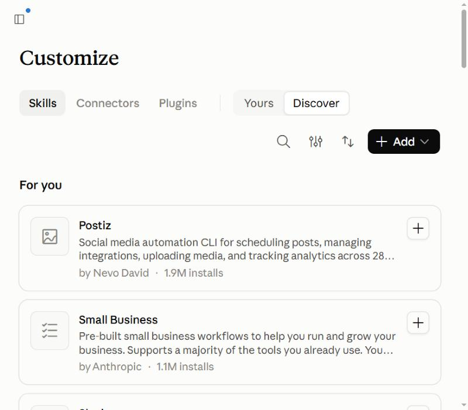
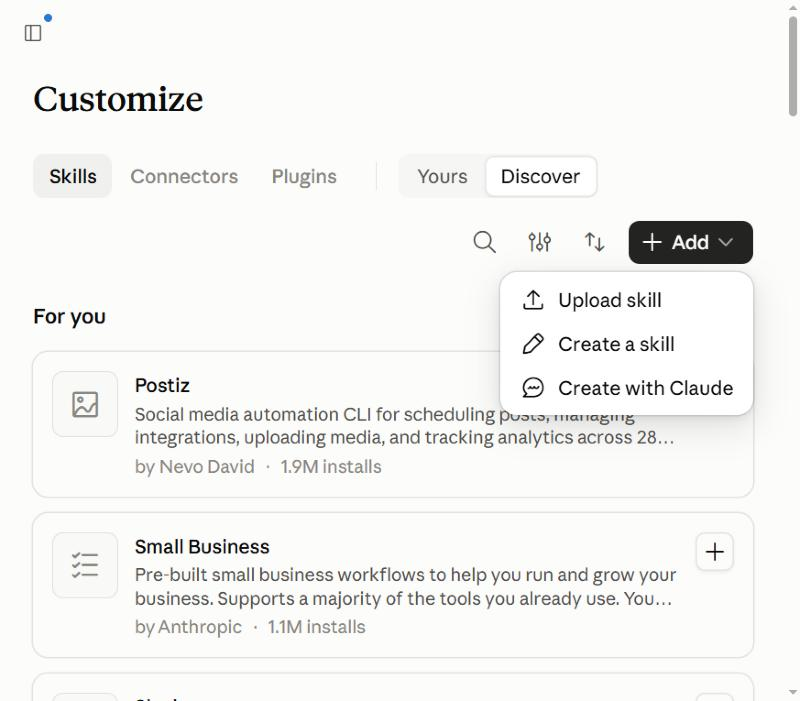

قد يصل ملف PDF من 20 صفحة، وفق التقدير الرسمي، إلى ما بين 30 و60 ألف token للنص وحده. وباستخدام أداة مجانية من Microsoft انخفض الملف نفسه إلى نحو 10 آلاف. في هذا الدليل الخطوات والقياس والحدود، دون مبالغة.
الـ token هو الوحدة التي يحسب بها Claude ما يقرؤه وما يكتبه. عند رفع ملف PDF لا يأخذ Claude النص فقط، بل تتحوّل كل صفحة إلى نص وإلى صورة أيضاً، وتُحتسب التكلفة على الاثنين. وتنص وثائق Anthropic الرسمية على ما يلي:

أداة مجانية ومفتوحة المصدر (بترخيص MIT)، تحوّل الملفات إلى نص بصيغة Markdown: نص نظيف يحافظ على العناوين والقوائم والجداول. وتدعم صيغ PDF وWord وPowerPoint وExcel وغيرها. ويصف المشروع الرسمي هذه الصيغة بأنها «token-efficient»، أي موفّرة في استهلاك الـ tokens.

pip install 'markitdown[all]'
markitdown path-to-file.pdf -o document.md

لتثبيت صيغ محددة فقط: pip install 'markitdown[pdf, docx, pptx]'
جرّبنا الأداة على أول 20 صفحة من وثيقة حكومية مجانية (NIST AI 100-1، إطار إدارة مخاطر الذكاء الاصطناعي):
| البند | القيمة |
|---|---|
| حجم ملف PDF (20 صفحة) | 1,766,051 bytes |
| حجم ملف Markdown الناتج | 43,387 bytes |
| عدد الكلمات | 4,484 |
| عدد الـ tokens بعد التحويل (قياس تقريبي) | ≈ 9,665 |
| التقدير الرسمي للنص وحده (20 صفحة) | 30,000 – 60,000 |
| مدة التحويل | ≈ 2.5 s |

NIST AI 100-1 1.2.2 Risk Tolerance While the AI RMF can be used to prioritize risk, it does not prescribe risk tolerance. Risk tolerance refers to the organization's or AI actor's readiness to bear the risk...جزء حقيقي من ناتج الأداة للصفحة نفسها (نحو 582 token للصفحة).
تتوفر على GitHub مهارة (Skill) جاهزة تشغّل أداة MarkItDown. وهي مهارة مجتمعية من إعداد Eleanor (@intellectronica)، تعمل في Claude وفي Claude Code، وليست صادرة عن Anthropic أو Microsoft.




uvx markitdown، لذا يجب أن تتوفر أداة uv على جهازك، فتثبيت المهارة لا يثبّت الأداة تلقائياً. ولتحقيق توفير فعلي، حوّل الملف قبل رفعه إلى Claude.وثائق Anthropic (تكلفة ملفات PDF): platform.claude.com/docs/en/build-with-claude/pdf-support
MarkItDown: github.com/microsoft/markitdown
المهارة المجتمعية: gist.github.com/AbhimanyuAryan/2bf1336f51cbacfb238c00426857d760 (نسخة من gist الخاص بـ intellectronica)
الملف التجريبي: NIST AI 100-1 (منشور حكومي أمريكي مجاني)
دليل Anthropic لرفع المهارات: support.claude.com/en/articles/12512180